How to use the app
How to use the Mass Spec Preppy app
How to use the app
BCA assay
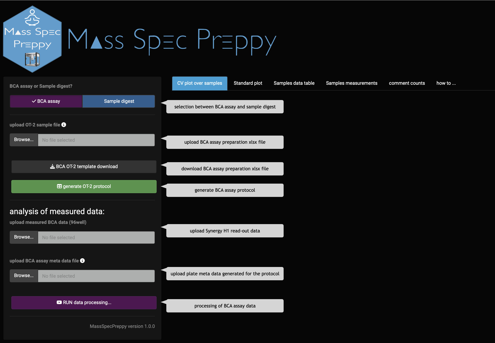
Be aware that you can only determine the protein concentration of 40 samples per plate
Steps to perform a BCA assay with the MassSpecPreppy app (General workflow, detailed information on the single steps can be found below):
- open the app and select
BCA assay - download the
BCA OT-2 template - fill out the BCA template excel file (Figure 2)
- upload the BCA template excel file
- click on
generate OT-2 protocol - unpack the downloaded zip folder, which contains:
- How-to HTML file
- OT-2 python protocol
- sample meta excel file essential for the analysis of the assay results later
- execute the python protocol in the OT-2 App (detailed instruction to run a protocol on OT-2) according to the deck layout in the how-to HTML file
- incubate the assay plate at 60 °C for 1 h and measure in the plate reader (Synergy H1)
- upload the Synergy H1 read-out file (step 8) together with the meta data file provided at step 6
- click on
RUN data analysis - data will be analyzed and protein concentration determination report can be downloaded
BCA template excel file
DO NOT USE “STD” or “BLK” in sample naming !!!
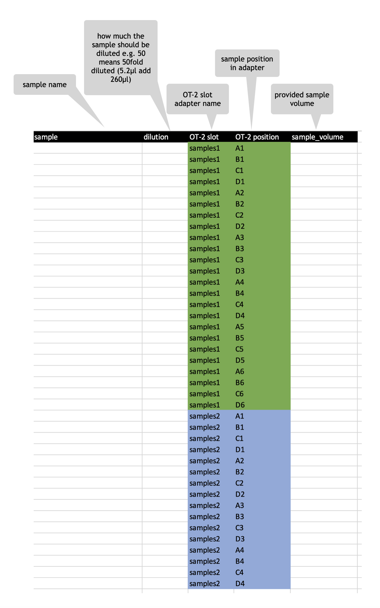
- always provide a volume
- the volume should be at least 10 µl
- since the final volume for the dilution of your sample is 260µl be aware when setting a 10x dilution 26µl will be utilized and 10µl of sample volume is not enough
- the robot has no liquid sensing !
BCA template - multiple dilutions per sample
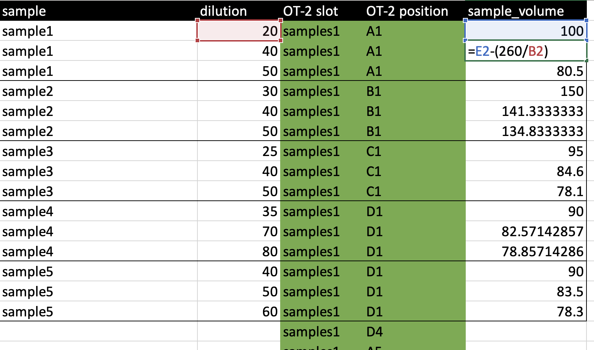
It is also possible to perform multiple dilutions per sample, e.g. if you cannot estimate the rough range where you sample may lie in the standard curve. For example, a human plasma sample (approx. 70-80 µg/µl) should be initially 50-fold diluted, and a 40-fold dilution should be used in the BCA assay to have read-outs in the linear range of the standard curve.
If you cannot estimate the protein concentration use multiple dilutions per sample. You can edit the BCA assay template excel file for that purpose to have e.g. a 30fold, 50fold and 80fold dilution of your sample. Be aware of the correct entries in OT-2 slot & OT-2 postion column when using multiple dilutions per sample. Also adjust the volume accordingly (Figure 3).
generated BCA assay files
After uploading the completed Excel file MassSpecPreppy will provide you with a zipped folder containing:
- How-to HTML file for the assay and robot operation
- OT-2 python protocol
- sample meta excel file essential for the analysis of the assay results later
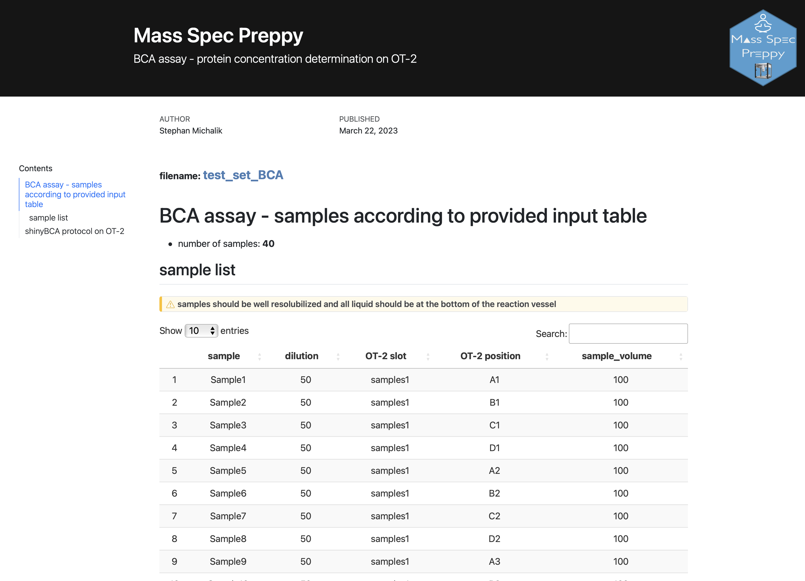
When opening the HTML file (Figure 4) you may find a detailed how-to procedure for the operation of the OT-2. The instructions in the HTML document include beside the sample list a deck layout plot (Figure 5), which graphically explains the user how to load the OT-2 for the assay.
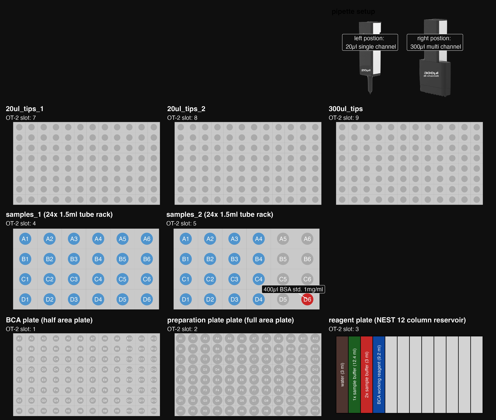
After the OT-2 is prepared, the python protocol can be executed in the OT-2 control software (detailed instruction to run a protocol on OT-2).
After running the protocol in OT-2 , the assay plate is sealed using aluminium foil and incubated at 60°C for 1 h in the dark. The assay plate has to cool down at room temperature before the measurement can take place in a microtiter plate reader.
Scan BCA assay plate with BioTek Synergy H1
The measurement can take place in any microtiter plate reader, as long as the required output design (see below) is obtained.
Steps to perform the measurement in a BioTek Synergy H1 (Agilent Technologies) and the associated software BioTek Gen5 (ver. 3.10.06).
Reaction takes place in a transparent half-area 96-well microplate (Greiner Bio-One).
- After incubation and cool down of the assay plate, remove the aluminium foil and place the plate in the plate carrier. Ensure that the plate is properly aligned.
- Open the measurement protocol in Gen5 (Section 1.1.3.1) and read the plate (“Create experiment and read now”).
- Data is exported automatically to excel according to the output settings (Section 1.1.3.1; Figure 7).
If the plate is re-read, manual export to excel is necessary. Every plate has to be measured and exported separately!
- Output xlsx file can be analysed in MassSpecPreppy-App.
Scan BCA assay plate: Protocol set-up in Gen5 software
- Protocol Type
- Standard Protocol (default settings)
- Procedure
- Plate Type: 96 WELL PLATE
- Use lid: deselected
- Actions: Read
- Read Method: Absorbance, Endpoint/Kinetics, Monochromators
- Read Step: Full Plate, Wavelength 562 nm, Read Speed normal, No Pathway Correction
- Plate Layout
- See provided layout file (PlateLayout_BCA_96well.xml) (Figure 6)
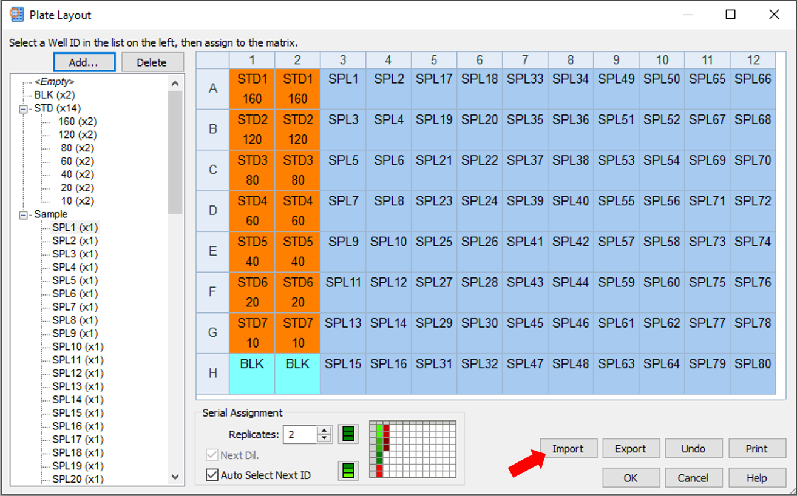
Figure 6: import plate layout
- Data Reduction
- None
- Report/Export Builders (Excel add-in necessary)
- Properties: Results plate-wise, Customised content
- Content: A table starting in cell A1 (Excel add-in; Table – Statistics – 562) (Figure 7)
- Identifier Types: Standard Curve, Blank, Sample
- Index: All
- Layout: Row-wise table, Sort by Well Type / Index
- Data: #1 - Plate Number, #2 - Well, #3 - 562
- Format: Export Row and Column Headers, Formatted Text
- Options:
- Workflow: Auto-execute export, each plate in a separate workbook
- Format: Formatted text, Export row and column headers
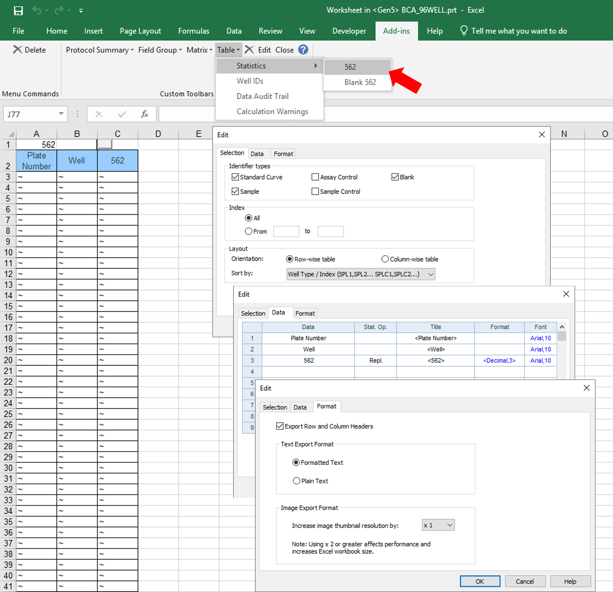
Analysis of BCA assay measurement results
The app offers the possibility to analyze the BCA assay data using a non-linear regression. After the analysis, an overview report of the measurement can be downloaded.
start the analysis of the BCA assay
In order to perform the analysis of the BCA assay the user must provide 2 files (Figure 8).
- plate reader measurement xlsx file
- sample meta Excel file, which was generated by the app during the OT-2 protocol generation
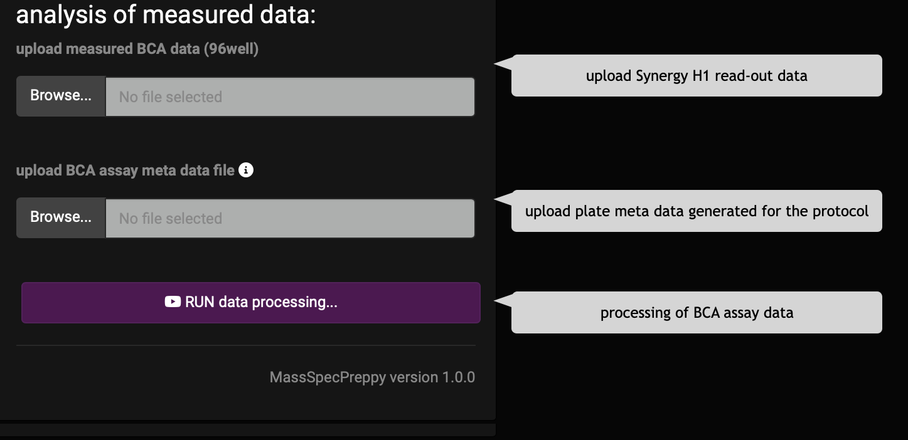
After up-loading the files hit the “Run data processing” button and the app will perfom the analysis.
BCA assay analysis results
CV over samples
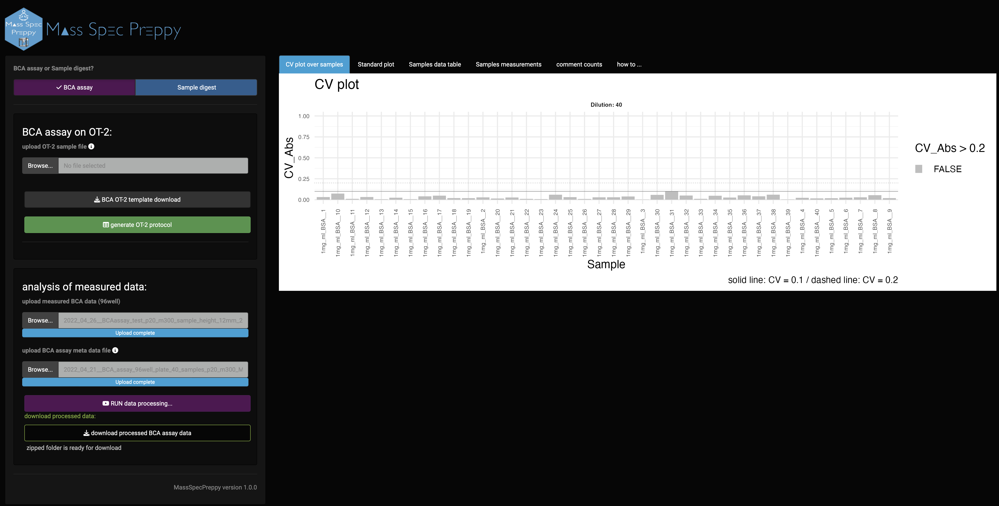
The first graph you see is the CV graph of the samples (Figure 9), which represents the CV over the technical measurement repetitions and is a measure of the reproducibility of the sample measurement.
Standard curve
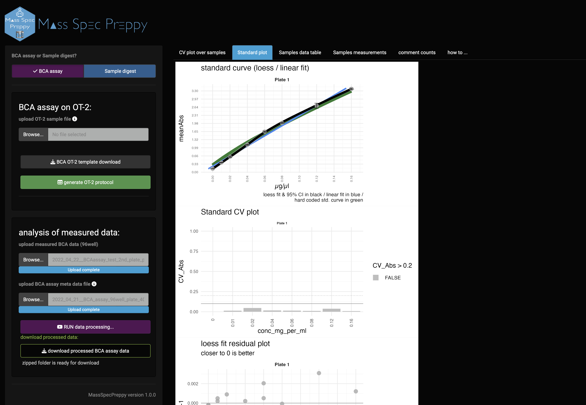
In the standard plot panel (Figure 10) the standard curve of the measurement is shown. The green background curve shows an optimal standard reference curve. Furthermore, also CV, residuals of the regression and Z-score of the measured standard curve are shown.
Data table
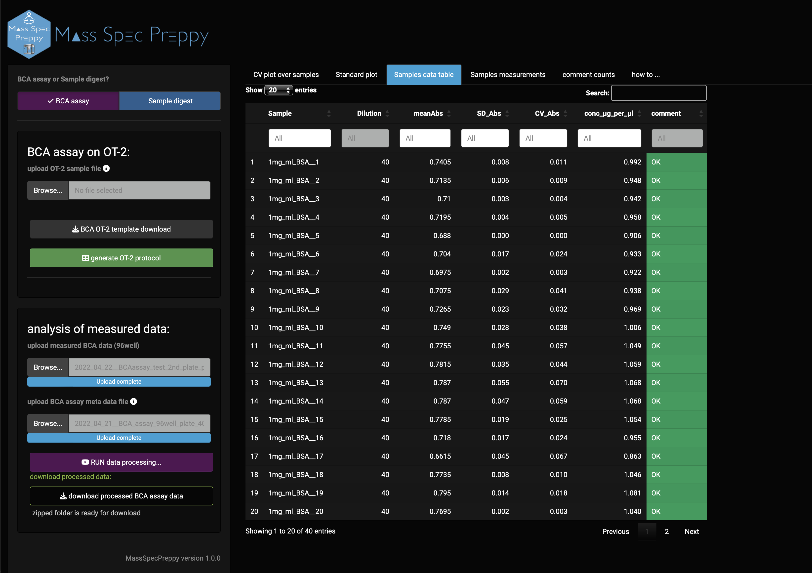
In the data table (Figure 11) you can find information like:
- sample name
- x-fold dilution used in the BCA assay
- mean absorption
- standard deviation of absorption
- coefficient of variation of absorption
- estimated protein concentration in µg/µl
- comment, which refers to Figure 12 (also stored in “how to …” panel)
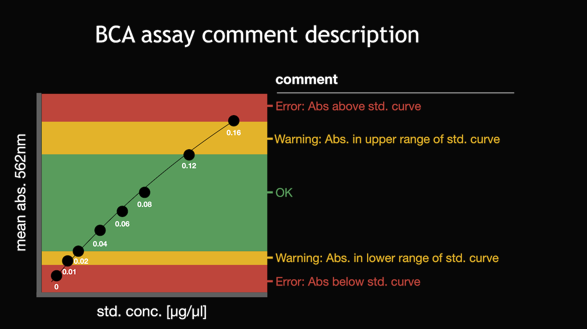
Samples measurements
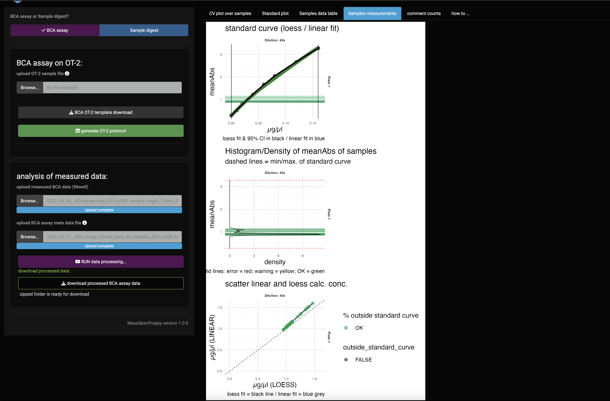
In the sample measurements plot panel (Figure 13) the standard curve of the measurement is shown together with the sample measurements. This indicates if you are in the linear region of the standard curve.
If you do not meet the linear range, it is advisable to repeat the measurement with a different sample dilution.
Excel report file
After the analysis is performed you are able to download the whole analysis. Plots and reports are combined in one folder.
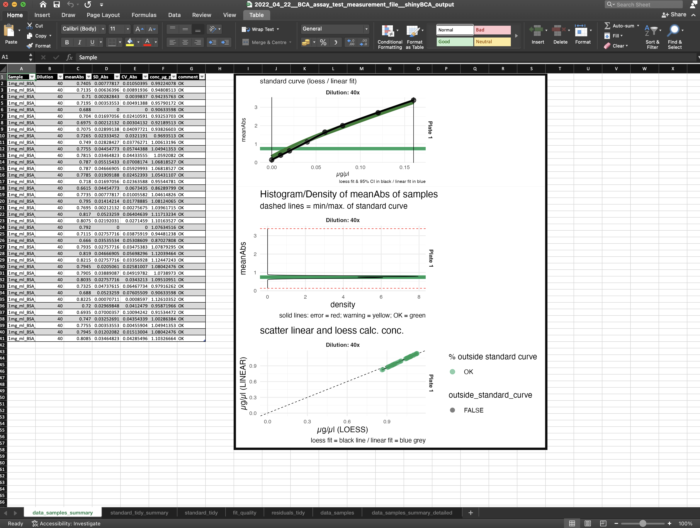
Sample digest
Please use the link (import custom labware definition in the OT-2 app) for a detailed description of how to import the custom labware definition for operating MassSpecPrepp successfully.
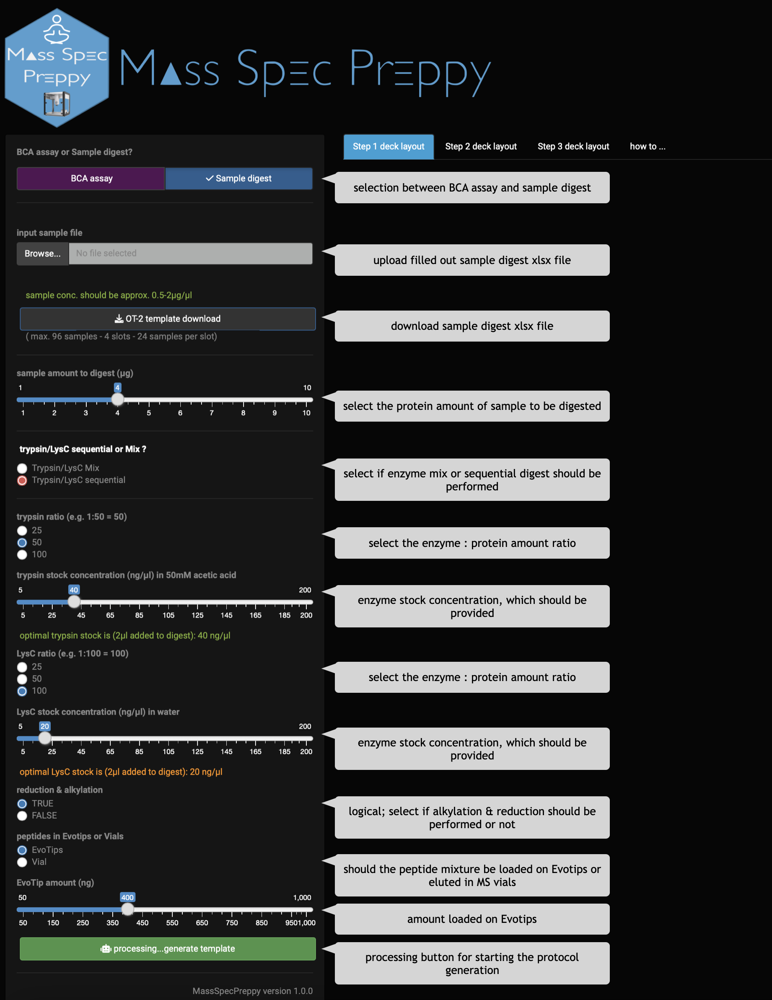
- open the app and select
Sample digest assay - download the
OT-2 template - fill out the sample digest template Excel file (Figure 16)
- upload the sample digest template Excel file
- do all digest parameter adjustments using radio buttons and sliders
- click on
processing...generate template - unpack the downloaded zip folder
- execute the python protocols in the OT-2 App step-wise (detailed instruction to run a protocol on OT-2)
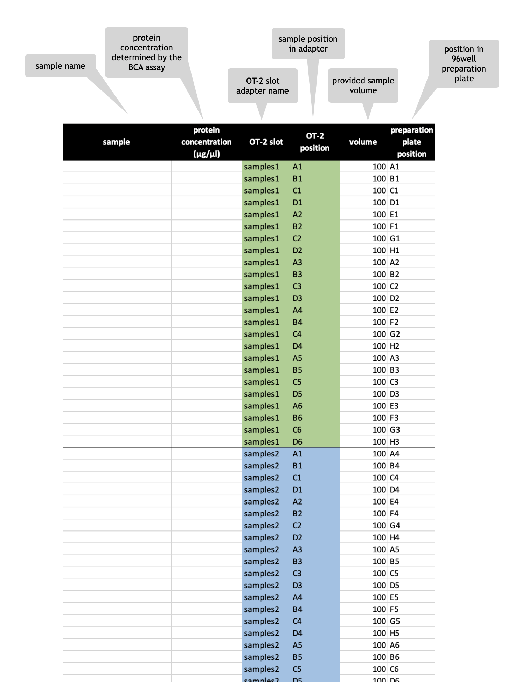
Sample digest excel file
Sample digest template - multiple digests of e.g. one sample
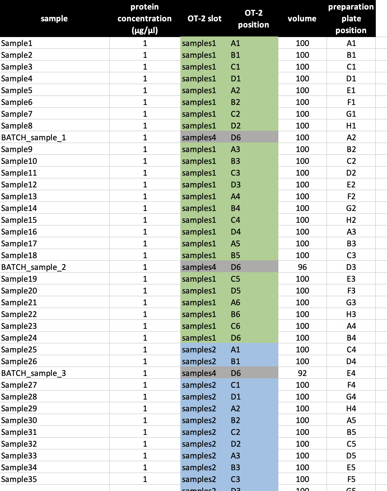
It is also possible to perform multiple digests per sample, e.g. if you want to add five digest batch standards. Be aware of the correct entries in OT-2 slot & OT-2 position column when using multiple digests per sample. Also adjust the volume accordingly (Figure 17).
Comments count
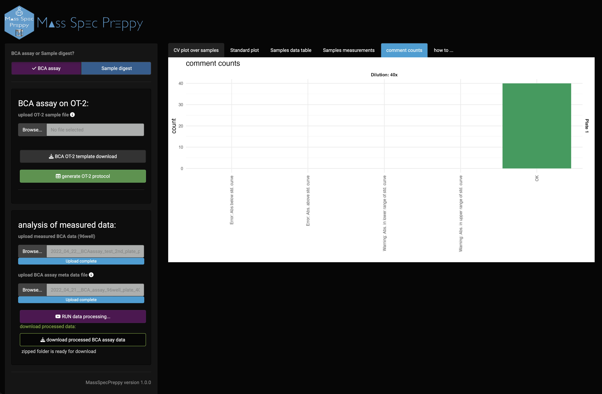
In the comments count bar chart (Figure 14) the count of comments is summarized. This is based on the comment categories defined in Figure 12. If all sample measurements are in the desired linear range of the standard curve it will look like in Figure 14.